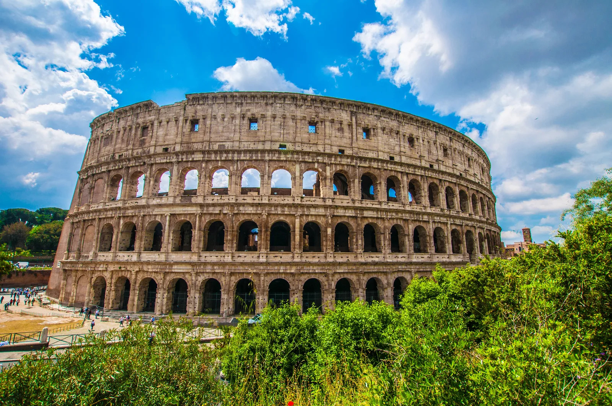

Экскурсионные туры
Италия
Италия - страна с богатейшим культурным наследием, где каждый город представляет собой музей под открытым небом.
Рим поразит вас Колизеем и Ватиканом, Флоренция - галереей Уффици и собором Санта-Мария-дель-Фьоре, Венеция - романтичными каналами и площадью Сан-Марко.
Обязательно попробуйте настоящую итальянскую кухню в местных тратториях. Лучшее время для экскурсионного тура - весна (апрель-май) и осень (сентябрь-октябрь), когда нет изнуряющей жары и толп туристов.
Франция
Франция предлагает невероятное разнообразие экскурсионных маршрутов.
Париж с Эйфелевой башней, Лувром и Нотр-Дамом; замки Луары; средневековый Мон-Сен-Мишель; винодельческие регионы Бордо и Бургундия; лавандовые поля Прованса - это лишь малая часть того, что можно увидеть. Особый шарм французским городам придают уютные кафе и булочные с ароматными круассанами.
Для экскурсий идеально подходят месяцы май-июнь и сентябрь, когда погода наиболее комфортна.
Египет
Египет - это путешествие вглубь тысячелетий к истокам человеческой цивилизации.
Величественные пирамиды Гизы, загадочный Сфинкс, храмы Луксора и Карнака, гробницы Долины Царей - все это производит неизгладимое впечатление. Круиз по Нилу позволит увидеть древние памятники в комфортных условиях.
Для экскурсионных туров лучше выбирать период с октября по апрель, когда температура воздуха днем составляет 25-30°C, а не поднимается до 40°C как летом.